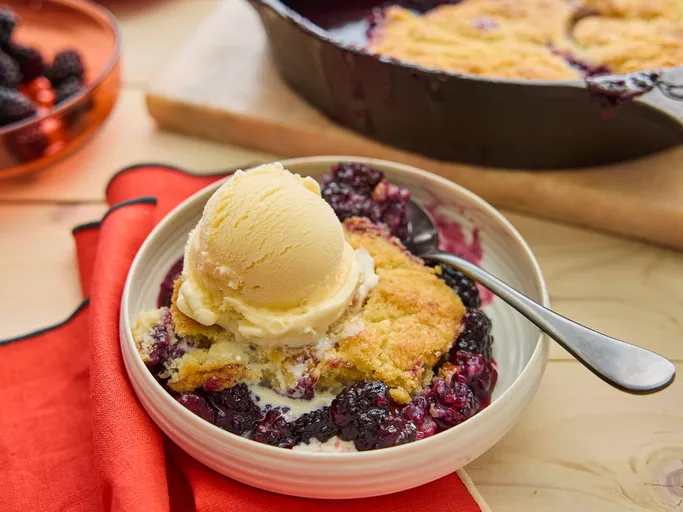

Blackberry Cobbler

Description
A sweet, juicy blackberry filling topped with a golden, buttery crust and baked to perfection
Ingredients
- 1 cup all purpose flour
- 1 1/2 cups white sugar, divided
- 1 teaspoon baking powder
- 1/2 teaspoon salt
- 6 tablespoons cold butter, cut into pieces
- 1/4 cup boiling water
- 2 Tablespoons cornstarch
- 1/4 cup cold water
- 4 cups fresh blackberries, rinsed and drained
- 1 tablespoon lemon juice
Directions
- Gather the ingredients. Preheat the oven to 400 degrees F(200 Degrees C). Line a baking sheet with aluminum foil.
- Mix flour, 1/2 cup sugar, baking powder, and salt together in a large bowl.
Cut in butter until mixture resembles coarse crumbs. Stir in boiling water just until the mixture is evenly moist.
- Dissolve cornstarch in cold water in a seperate bowl.
Mix in a remaining cup, sugar, blackberries, and lemon juice.
Transer to a cast iron skillet and bring to a boil, stirring frequently.
- Drop in spoonfuls of dough, then place the skillet onto the prepared baking sheet.
- Bake in the preheated oven until dough is golden brown, about 25 minutes
- Enjoy!
Home